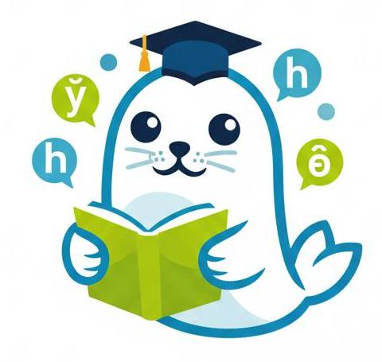
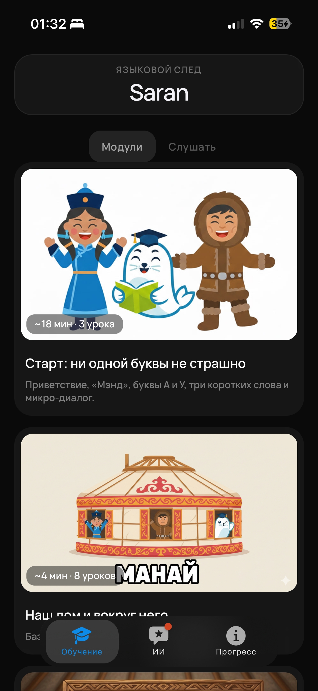
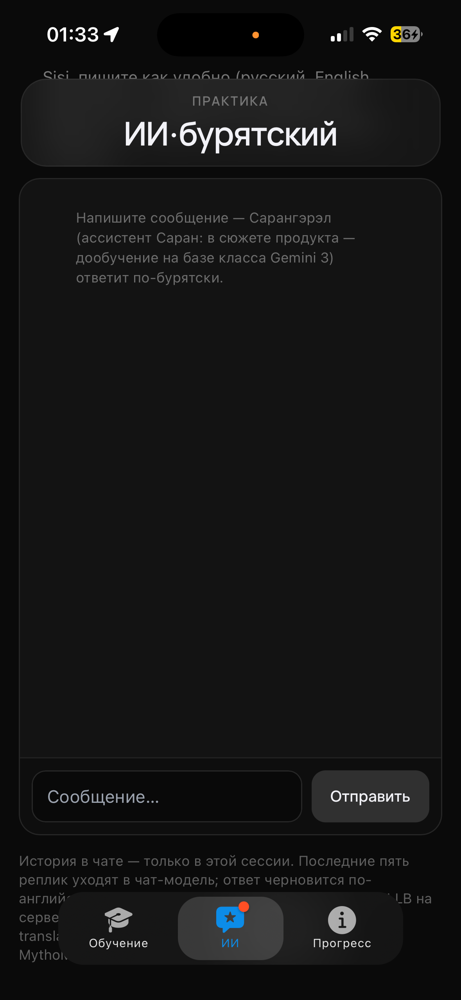
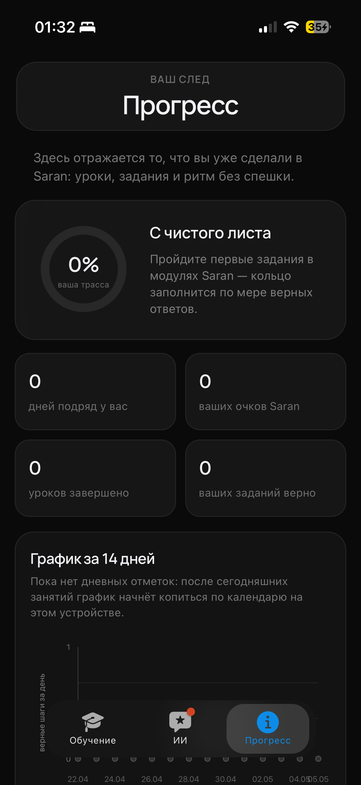
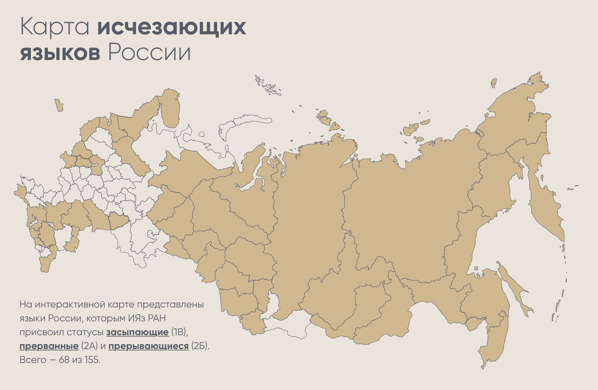
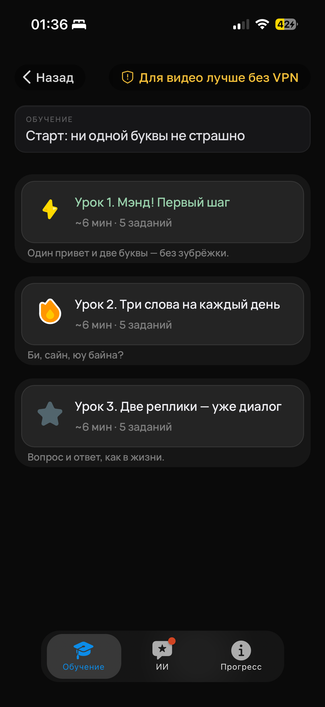
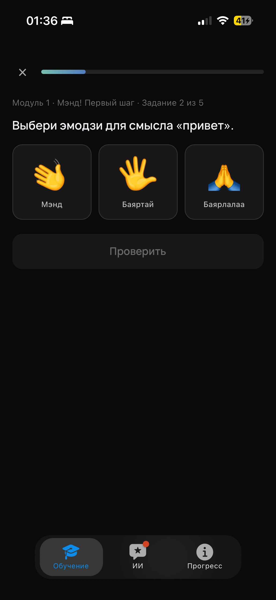
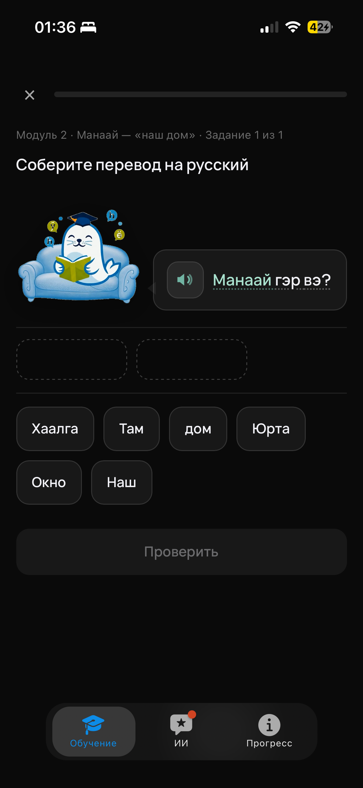

Уроки и модули
Темы разбиты на короткие шаги: от первых букв и приветствий к бытовым ситуациям. Видно, сколько по времени займёт блок и что внутри.

Языковой след
Саран — современное образовательное приложение, направленное на сохранение исчезающих языков коренных народов России через цифровые технологии. Мы переносим культурное наследие в удобную среду смартфона, используя интерактивные уроки и игровые механики, чтобы сделать обучение актуальным для молодёжи. Проект объединяет технический стек с экспертизой лингвистов, создавая инструмент для возрождения живого общения — в спокойном темпе, с понятной структурой модулей и наглядным прогрессом.




На интерактивной карте отмечены языки России, которым Институт языкознания РАН присвоил статусы засыпающие (1В), прерванные (2А) и прерывающие (2Б). По данным классификации это 68 из 155 — наглядное подтверждение масштаба вызова, на который отвечает Саран.
Мы создаём среду, где можно не «отметить курс пройденным», а реально слышать язык, понимать короткие фразы и постепенно наращивать уверенность. Подача бережная: и для носителей, которые хотят систематизировать знания, и для изучающих с нуля.
В приложении уроки выстроены в логичную цепочку: знакомство с алфавитом и произношением, опорные слова, микродиалоги и практика. Рядом с обучением — наглядная статистика, напоминание о серии занятий и спокойный тон интерфейса: поддержка мотивации без навязчивой геймификации.
В интерфейсе три опорных раздела (нижняя навигация):
Такой набор разделов держит баланс между учёбой, поддержкой в моменте сомнения и чувством устойчивого ритма — без спешки и перегруза.
Каждый урок — это несколько коротких заданий подряд: сначала пояснение и примеры, затем интерактив — выбор варианта, работа с карточками или сборка фразы из слов, как в задании «Соберите перевод». Вверху всегда видно, где вы в модуле: номер задания, прогресс полосой и короткий контекст («Модуль · тема · задание N из M»).
Есть подсказки и озвучка там, где важно услышать произношение; кнопка «Проверить» подводит итог шага. Такой ритм держит внимание без длинных лекций — можно заниматься маленькими сессиями и возвращаться к списку уроков, когда удобно.
Нажмите на макет телефона — откроется полноразмерный скрин в новой вкладке.



Пройденный урок — задания выполнены, урок отмечен как завершённый.
Текущий урок — сейчас проходите именно его; дальше по списку откроется следующий.
Не пройденный урок — ещё не начат или ждёт очереди после текущего.
Попробуйте Саран: в Telegram-боте — полноценная версия, на сайте — MVP для знакомства с продуктом.
Темы разбиты на короткие шаги: от первых букв и приветствий к бытовым ситуациям. Видно, сколько по времени займёт блок и что внутри.
Статистика по дням, очкам и урокам помогает не бросать занятия на полпути и замечать реальный рост, а не только отметки о прохождении.
Вопросы по языку можно закрыть в том же приложении: без долгого переключения контекста и потери нити урока.
Наследие и практика — в устройстве, которое уже в кармане: учиться можно короткими сессиями там, где вам удобно.
Для начинающих, кто хочет аккуратно войти в язык без давления «выучить всё за неделю». Для тех, кто уже знаком с культурой региона и хочет привести грамматику и лексику в порядок. Для преподавателей и энтузиастов, которым важен уважительный тон подачи и опора на структурированные материалы, а не случайные наборы фраз.
По вопросам сотрудничества, партнёрства и идей — напишите создателю на почту.